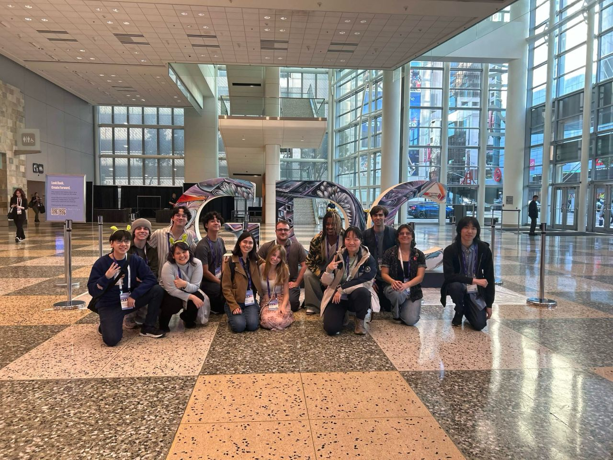
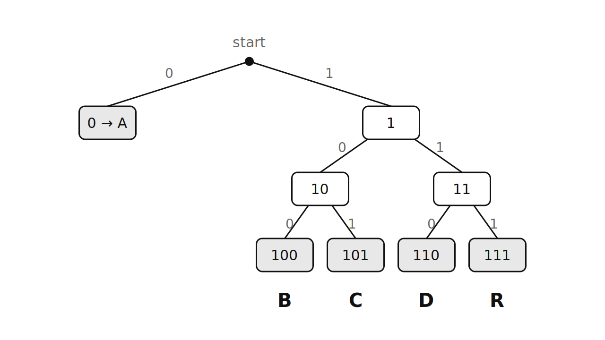
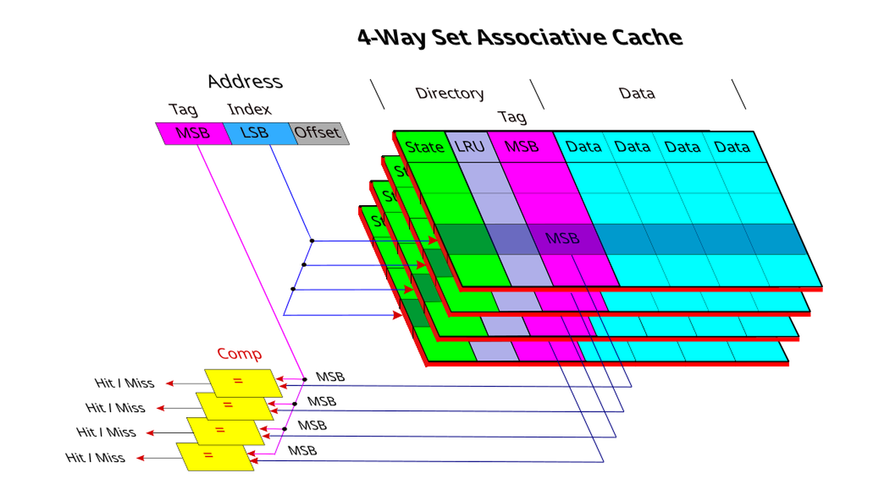
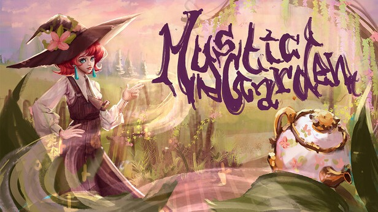

Hi there! I'm Tristan, an engineering student studying computer science at the University of Michigan. I have a passion for software engineering and video game development. I am currently the programming director for WolverineSoft, a ~20 member game development studio on campus. My goal is to create unique, memorable experiences through games that motivate others to explore their passions. I have many things yet to learn and use this site to document the advances I make in my journey.

My academic interests shift quite a bit. Right now, I am quite interested in computer architecture and am researching how I may develop my own ISA, assembler, linker, and emulator. I worked on implementing a similar toolchain for EECS370, Intro to Computer Organization. However, the main difference is that I previously implemented a mock (albeit Turing complete) instruction set, LC2K, which is a reduced instruction set designed by EECS370 staff to make learning the concepts of assembly easier.
While I have not yet figured the exact logistics of my own instruction set, I would like to support a wider array of instructions than those offered by LC2K. Another direction I am thinking of taking this project is emulating an existing ISA for a more complicated chip than the one designed for LC2K. Recently, I saw a project emulating the 6502 Instruction Set, which was ran on early technology such as he Commodore 64, Atari 2600, and the NES. While the 6502 may be a bit beyond my capabilities as someone familiarizing themselves with the computer architecture space, I do believe it would still be quite fun to find another chip to emulate.
Apart from computer architecture, microarchitecture, compilers, etc. I would like to involve myself more in the theoretics of computer science. I am interested in learning more about formal methods, computability, and logic. I am actively seeking research / learning opportunities to both deepen my understanding of these areas and confirm my surface level intrigue as something more involved.

September 18th, 2026
Detailed writeup on implementation, compression diagnostics, and limitations of my Canonical, Length-Limited Huffman file compression and decompression algorithm.
C
Makefile

Project writeup
A C simulator for configurable cache hierarchies. Explore address mapping, replacement policies, memory trace analysis, and how locality affects cache performance.
C
Computer Architecture

Project writeup
Implementation notes on authored map chunks, tile-based enemy spawning, floor XP, data-driven upgrades, and the Worm boss encounter.
C#
Unity

Project writeup
Implementation notes on the Flowvine item network, seasons, hydration and harvest chance, plant spells, quest saving, and the Raphael Lotus.
C#
Unity
A C simulator that models configurable L1 and L2 cache hierarchies from memory-access traces. Supports per-level capacity, block size, associativity, and LRU, FIFO, MRU, or random replacement policies, with hit, miss, eviction, and writeback statistics.
Game jams are short, team events where participants make a game from scratch, often around a shared theme or creative constraint (think of a hackathon but for game development). The games below are projects I've been the main programmer for during game jams. All were made in Unity and finished in under 48 hours.

A top-down, wave-based roguelike shooter featuring three bosses, made for the Michigan Game Developers Conference Game Jam. It won first place and a $750 prize sponsored by Bluebird Studios.

A rhythm game inspired by Friday Night Funkin', which placed 3rd in the 2024 WolverineSoft Pumpkin Jam. Polishing for this game continued intermittently after the jam concluded.

A blackjack simulator with the goal of winning enough money to afford your wedding. This parody game was made for the 2025 Global Game Jam theme, “Bubble.”
A Thanksgiving-themed asymmetrical PvP infinite runner, which placed 3rd in the 2024 WolverineSoft Turkey Jam. Minimal 3D art was also done by me.